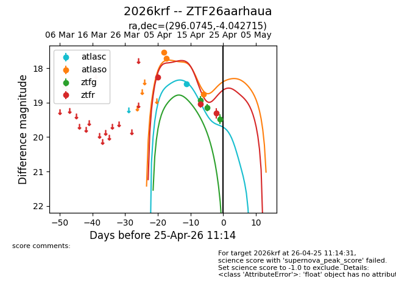
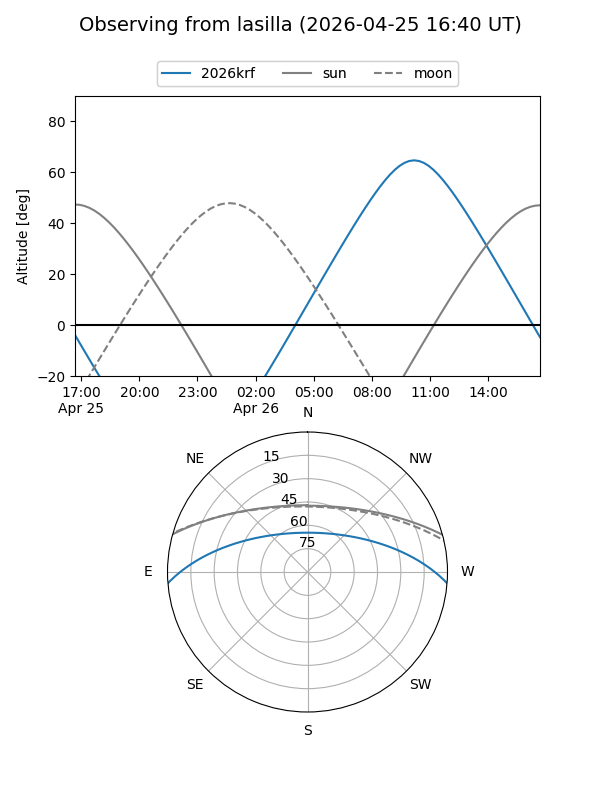
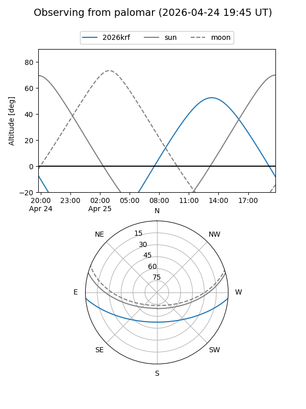
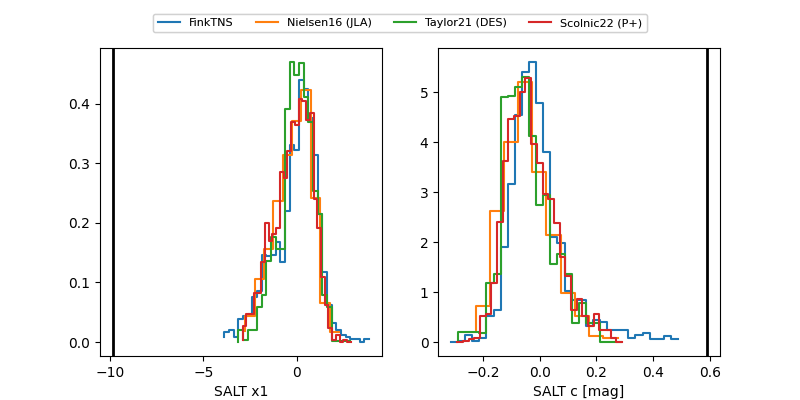

2026krf
Target 2026krf at 2026-04-25 11:15
Aliases and brokers:
FINK: link
Lasair: link
ALeRCE: link
TNS: link
YSE: link
alt names
ZTF26aarhaua (ztf,fink_ztf)
2026krf (tns,yse)
Coordinates:
equatorial (ra, dec) = 296.0745,-4.04272
equatorial (HMS+DMS) = 19:44:17.87,-04:02:33.77
galactic (l, b) = (35.3635,-13.59732)
Flags:
Photometry:
last atlasc=18.47, atlaso=18.76, ztfg=19.48, ztfr=19.31
1 atlasc, 3 atlaso, 3 ztfg, 3 ztfr detections
Lightcurve

Visibility


Additional plots
